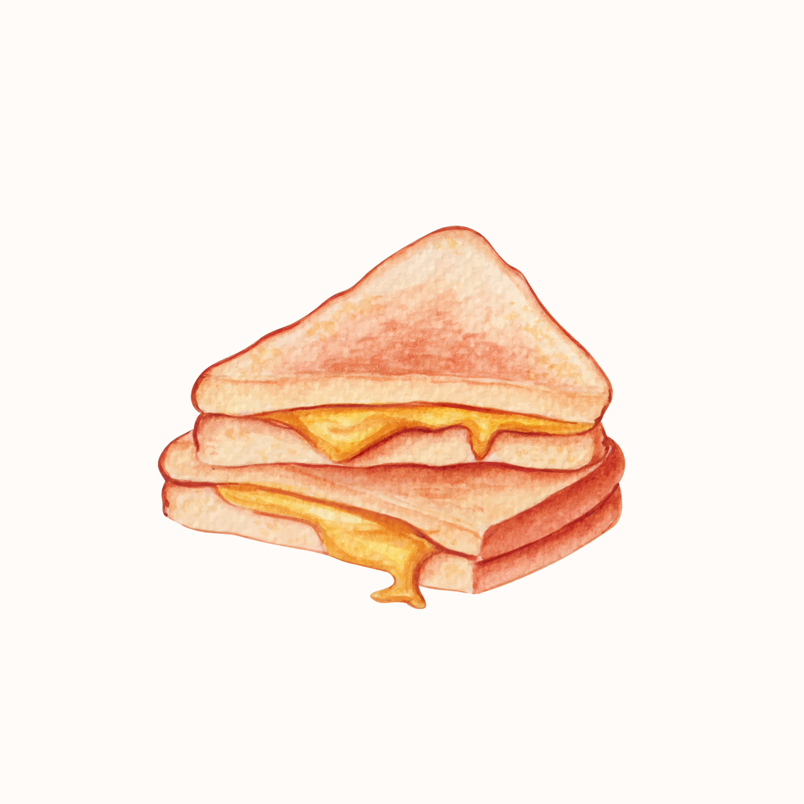

Recette de grilled cheese

Un grilled cheese bien chaud !
Description
Le grilled cheese est un plat rapide à préparer.
Ingrédients
- 2 tranches de pain
- 2 tranches de fromages kraft
- 1 cuillère à thé de beurre
Étapes
- Beurrer le côté extérieur de chaque tranche
- Chauffer un rond à medium
- Assembler le grilled cheese et placer le sur la poêle chaude
- Cuire jusqu'à ce qu'il soit croustillant
Voilà, bon appétit !
Page principale